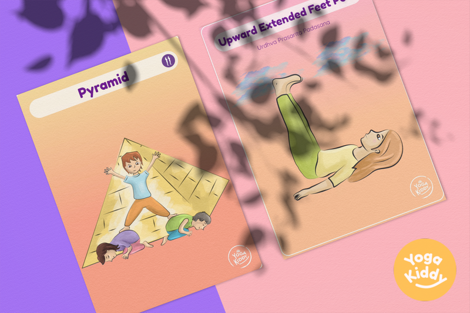
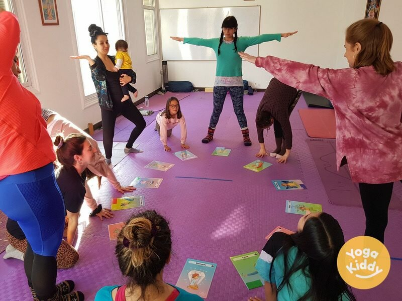

El yoga es una poderosa herramienta para ayudar a los niños a desarrollar el amor por el movimiento saludable, la atención plena y el autoconocimiento. Y con nuestra oferta exclusiva de 10 tarjetas de yoga gratuitas para niños, puedes introducir a tu hijo en el maravilloso mundo del yoga de una forma divertida y atractiva.

Cada tarjeta presenta una postura de yoga diferente, como Camello, Bastón, Hoja doblada, Oruga, Pirámide, Puente, Saludo, Silla, Palo al cielo y Vela. Estas posturas se han elegido específicamente para que sean apropiadas para la edad y fáciles de hacer para los niños, al tiempo que proporcionan un gran entrenamiento y ayudan a mejorar su flexibilidad, equilibrio y concentración.
¿Y lo mejor? Estas tarjetas están listas para descargar e imprimir, ¡así que puedes empezar a practicar yoga con tu hijo de inmediato!
Pero el yoga no consiste sólo en hacer ejercicio físico, sino también en desarrollar la atención y el conocimiento de uno mismo. A medida que tu hijo practique estas posturas, aprenderá a concentrarse en su respiración y en las sensaciones de su cuerpo. Aprenderá a estar presente en el momento y a aquietar la mente.
Esta oferta no es sólo acerca de los beneficios físicos del yoga, se trata de dar a su hijo el regalo de la atención plena y la auto-conciencia que les servirá en todas las áreas de su vida.
¿A qué esperas? Descarga e imprime hoy mismo estas 10 tarjetas gratuitas de yoga para niños e inicia a tu hijo en un viaje de descubrimiento, autoconocimiento y movimiento saludable.